SPI and the Logic Analyzer¶
SPI at a glance¶
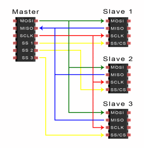
-
Serial Peripheral Interface: fast serial bus with a clock.
-
Full duplex: data goes in both directions at the same time (I2C is half duplex).
-
No addresses: each slave has its own chip-select (CS / SS) line.
-
Speeds of 10–80 MHz: displays, SD cards, flash memory, fast ADCs.
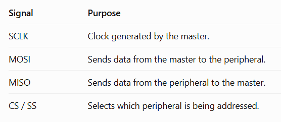
Sources: Figures: lecture 6 Embedded Programming, lectures 1–6; Basics of the SPI Communication Protocol
How an SPI transfer works¶
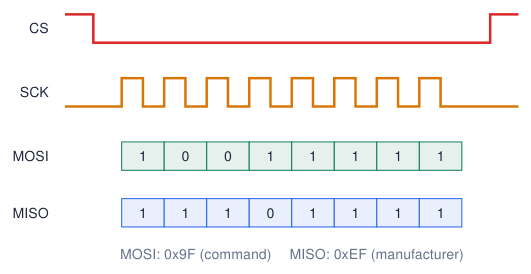
-
Master pulls CS LOW: “you, listen”.
-
Master generates 8 clock pulses on SCK.
-
With every pulse one bit goes out on MOSI (master out, slave in) and one bit comes in on MISO.
-
After the last byte: CS HIGH.
Exchange
SPI always exchanges bytes: SPI.transfer(x) sends x and returns the received byte.
SPI modes and settings¶
SPISettings(speed, order, mode)
-
Speed: maximum clock the slave accepts (datasheet), e.g. 1 MHz to start.
-
Bit order:
MSBFIRSTfor almost every device. -
Mode: most devices use mode 0; check the datasheet.
Wrong mode
Data shifted by one bit, or all 0xFF/0x00: first suspect the mode and the CS wiring.
SPI: fast, full-duplex¶
#include <SPI.h>
const int CS_PIN = 5;
void setup() {
Serial.begin(115200);
pinMode(CS_PIN, OUTPUT);
digitalWrite(CS_PIN, HIGH);
SPI.begin(18, 19, 23, CS_PIN); // SCK, MISO, MOSI, SS
SPI.beginTransaction(SPISettings(1000000, MSBFIRST, SPI_MODE0));
digitalWrite(CS_PIN, LOW);
SPI.transfer(0x9F); // JEDEC "read ID"
uint8_t maker = SPI.transfer(0x00);
digitalWrite(CS_PIN, HIGH);
SPI.endTransaction();
Serial.printf("Manufacturer ID: 0x%02X\n", maker);
}
void loop() {}
| VSPI | HSPI | |
|---|---|---|
| SCK | 18 | 14 |
| MISO | 19 | 12 |
| MOSI | 23 | 13 |
| SS | 5 | 15 |
-
Displays, SD cards, external flash, fast ADCs.
-
One CS line per device.
-
Up to 80 MHz on IO_MUX pins.
Sources: Espressif: GPIO Matrix and Pin Mux
Original SPI diagrams: individual selects and daisy chain¶
Individual chip-selects
-
SCK, MOSI and MISO are shared.
-
Each device has a separate select wire.
-
Only the selected device drives MISO.
Daisy chain: a different arrangement
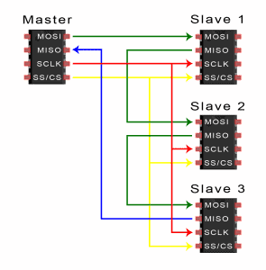
-
Devices pass serial data to the next device.
-
The chain shares clock and select.
-
Requires devices that support chaining; check the datasheet.
Sources: Both original diagrams: lecture 6 slide 14 Embedded Programming, lectures 1–6; Basics of the SPI Communication Protocol
UART vs I2C vs SPI¶
| UART | I2C | SPI | |
|---|---|---|---|
| Signal wires | 2 (TX, RX) | 2 (SDA, SCL) | 3 + 1 CS per slave |
| Clock | no (agreed baud) | yes | yes |
| Devices | 2 (point to point) | many (addresses) | many (chip selects) |
| Duplex | full | half | full |
| Typical speed | 9.6–921 kbit/s | 100–400 kHz | 1–80 MHz |
| Distance | metres (RS-232/485) | short, on a board | short, on a board |
| Typical use | PC, GPS, modules | sensors, small displays | displays, SD card, flash |
Which one?
Usually the device decides: read the datasheet. Many sensors support both I2C and SPI (e.g. the BME280).
Sources: Espressif: GPIO Matrix and Pin Mux
The logic analyzer: seeing your signals¶
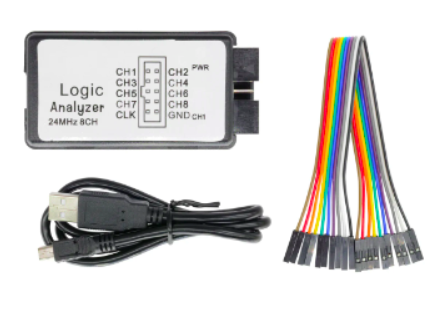
-
Records digital signals (HIGH/LOW) on several channels at the same time.
-
Hardware debugging vs software debugging: you see what really happens on the wires.
-
Debug communication (UART, I2C, SPI are decoded into bytes) and timing problems.
-
Cheap 8-channel, 24 MHz analyzers + free PulseView software (sigrok).
Installation (Windows)
Install PulseView; if needed, assign WinUSB to the analyzer using Zadig. Select fx2lafw in PulseView. Older builds may also need the Visual C++ 2010 runtime (x86/x64).
Sources: Embedded Programming, lectures 1–6; PulseView: a Qt based logic analyzer, oscilloscope and MSO GUI for sigrok
Capturing a transaction, step by step¶
-
Connect GND of the analyzer to GND of the circuit (always first!).
-
Connect channels to the signals: CH0 = SCL, CH1 = SDA (or CS, SCK, MOSI, MISO).
-
Choose the sample rate: start around 10\(\times\) the bus clock/bit rate or more; also set the sample count for the required time window.
-
Set a supported trigger: e.g. falling CS (SPI). Falling SDA is a candidate for I2C START; verify that SCL is HIGH.
-
Capture, then add a protocol decoder.
| Signal | Sample rate |
|---|---|
| I2C 100 kHz | \(\geq\) 1 MHz |
| I2C 400 kHz | \(\geq\) 4 MHz |
| UART 115 200 baud | 2 MHz to start |
| SPI 1 MHz | 12 MHz to start |
| PWM 5 kHz | \(\geq\) 500 kHz |
Why a trigger?
A trigger selects an event to align the capture with. Available conditions and pre-trigger history depend on the device/driver. Start with no trigger if unsure.
Sources: Embedded Programming, lectures 1–6; PulseView: a Qt based logic analyzer, oscilloscope and MSO GUI for sigrok
Inside a logic analyzer: voltage becomes sampled bits¶
-
A probe observes a signal relative to GND.
-
The input threshold classifies it as 0 or 1.
-
A sampling clock records all enabled channels at regular intervals.
-
Software draws the samples. A decoder interprets their pattern as bytes or bus events.
Two different clocks
The ESP32 produces the signal. The analyzer’s independent sample clock observes it: \(\Delta t=1/f_s\). At \(f_s=1\,\mathrm{MHz}\), samples are \(1\,\text{\textmu s}\) apart.
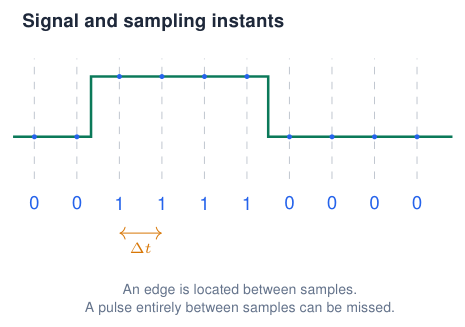
What the trace can tell you
Measure levels, order and timing. Use an oscilloscope to inspect voltage shape, noise and rise time.
PulseView: connect the instrument and name the inputs¶
-
Connect the analyzer by USB; power the ESP32 normally.
-
Select the real device instead of Demo device. For the common FX2 analyzer: Connect to Device \(\rightarrow\) fx2lafw \(\rightarrow\) USB \(\rightarrow\) Scan \(\rightarrow\) select the device.
-
Connect analyzer GND to board GND, then the signal probes.
-
Enable the required inputs. Rename D0/D1 to the signal names to make their role visible.
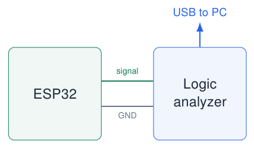
Input names are not GPIO numbers
D0 means analyzer channel 0. It may be clipped to GPIO23, GPIO17 or any chosen signal.
Windows: assign WinUSB to the analyzer in Zadig if needed; keep the ESP32 USB–UART driver. Select fx2lafw in PulseView. Check input limits for 3.3 V logic; probes observe signals and do not power the circuit.
Sources: PulseView manual: device selection and Windows installation
Choose both sample rate and recording length¶
\(\Delta t=\dfrac{1}{f_s}\qquad T_{\rm capture}=\dfrac{N_s}{f_s}\qquad N_s=f_s\,T_{\rm capture}\)
\(f_s\): samples per second\(N_s\): sample instants per channel\(T_{\rm capture}\): recorded time
Resolve the shortest feature
Start around 10 samples per bit/clock period or more for decoding; increase for short pulses and timing detail. At 115200 baud, 2 MHz gives about 17 samples per bit.
Faster is not a longer recording
With 100 k samples: 1 MHz records 100 ms; 10 MHz records only 10 ms. Choose the closest supported values and recalculate the window.
Blink capture: wire it, set it, run it¶
const int LED = 23; // blue course-board LED
void setup() {
pinMode(LED, OUTPUT);
}
void loop() {
digitalWrite(LED, HIGH);
delay(250);
digitalWrite(LED, LOW);
delay(750);
}
Probe at the GPIO side of the LED resistor
-
Analyzer GND \(\rightarrow\) board GND.
-
D0 \(\rightarrow\) GPIO23; rename it LED.
| PulseView setting | Value |
|---|---|
| Enabled input | D0 |
| Sample rate | 10 kHz |
| Samples | 50 k (\(=5\) s) |
| Trigger | D0 rising edge, if available |
| Protocol decoder | none needed |
Click Run, then Zoom to Fit. If an edge trigger is unavailable, start without a trigger: the signal repeats.
Read Blink: period, frequency and duty cycle¶
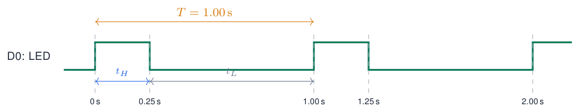
-
Enable cursors; place them on two consecutive rising edges to measure \(T\).
-
Rising to falling gives \(t_H\approx250\) ms.
-
Falling to rising gives \(t_L\approx750\) ms.
Calculate from the trace
\(T=t_H+t_L=1\,\mathrm{s}\)
\(f=1/T=1\,\mathrm{Hz}\)
\(D=t_H/T\times100\%=25\%\)
Optional analyzer: PWM decoder
Add the PWM decoder; map its Data input to D0 and choose active-high polarity. Compare its duty-cycle annotations with your cursors. These describe the electrical HIGH time; an active-low LED would be on during LOW.
Sources: sigrok PWM decoder; illustrative waveform, nominal delays
UART capture: generate a byte you can recognise¶
void setup() {
// UART2: baud, format, RX, TX
Serial2.begin(115200, SERIAL_8N1, 16, 17);
}
void loop() {
Serial2.write('A'); // one byte: 0x41
delay(20);
}
What is sent?
write('A') sends one byte. println("A") adds CR and LF: 0x41 0x0D 0x0A. Capture on TX2, not on the USB cable.
The analyzer listens in parallel
-
GND \(\rightarrow\) board GND.
-
D0 \(\rightarrow\) GPIO17 (ESP32 TX2).
-
Optional D1 \(\rightarrow\) GPIO16 (ESP32 RX2) to observe a second device’s replies. Leave it unassigned for this example.
| Capture setting | Value |
|---|---|
| Sample rate | 2 MHz |
| Samples | 200 k (\(=100\) ms) |
| Trigger | D0 falling edge, if available |
| Expected idle state | HIGH |
The falling edge marks the start bit. Click Run; zoom in on one burst before adding the decoder.
Sources: Arduino-ESP32 Serial API
Configure the UART analyzer: the settings must match the sender¶
Add UART; click its decoder row to edit the channel mapping and options.
| Decoder field | This example |
|---|---|
| TX | D0 (GPIO17) |
| RX | unassigned |
| Baud rate | 115200 |
| Frame: data/parity/stop | 8 / none / 1 (8N1) |
| Bit order | LSB first |
| Invert TX | no |
| Data format | ASCII or hex |
| Sample point | 50% (default) |
There is no clock wire
The decoder uses the baud rate to locate bit centres after the start edge. \(T_{\rm bit}=1/115200\approx8.68\,\text{\textmu s}\). One 8N1 frame has 10 bits: about 86.8 .
Check the result
Expect repeated A or 0x41, without framing errors. Changing the decoder to 9600 does not change the captured wire: it only interprets it incorrectly. The 2 MHz sample rate is not the 115200 baud rate.
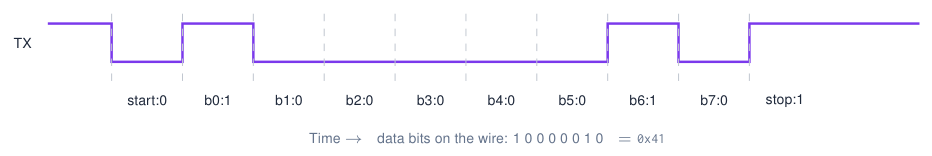
Sources: sigrok UART decoder options; illustrative 8N1 frame
I2C capture: read a BME280 chip ID¶
#include <Wire.h>
void setup() {
Serial.begin(115200);
Wire.begin(19, 18); // course board: SDA, SCL
Wire.setClock(100000);
}
void loop() {
Wire.beginTransmission(0x76);
Wire.write(0xD0); // chip-ID register
if (Wire.endTransmission(false) == 0) {
if (Wire.requestFrom((uint8_t)0x76,
(size_t)1, true) == 1) {
Serial.printf("ID: 0x%02X\n", Wire.read());
}
}
delay(1000);
}
Probe the existing bus in parallel
-
GND \(\rightarrow\) board GND.
-
D0 \(\rightarrow\) GPIO18 (SCL).
-
D1 \(\rightarrow\) GPIO19 (SDA).
-
Sensor on the same bus, with 3.3 V pull-ups; both lines idle HIGH.
Capture settings
Both inputs enabled; 2 MHz, 4 M samples \(=2\) s, no trigger: capture a complete repeating transaction. For a short 100 ms window use 200 k samples; if supported, trigger on SDA falling with SCL HIGH and retain pre-trigger samples to include START.
Use address 0x76 or 0x77 to match the sensor. Run separately from SPI/LED sketches sharing these pins.
Sources: Arduino-ESP32 I2C API; BME280 register 0xD0
Configure the I2C analyzer: map clock and data¶
Add the I2C decoder; open its settings and verify the assignments yourself.
No baud-rate field is needed
I2C carries its own clock on SCL. The decoder reads SDA at the clock edges; the capture sample rate still has to resolve both lines.
Why does 0x76 sometimes appear as 0xEC?
-
The wire sends 7 address bits + R/W.
-
Write byte: \((\texttt{0x76}\ll1)|0=\texttt{0xEC}\).
-
Read byte: \((\texttt{0x76}\ll1)|1=\texttt{0xED}\).
-
shifted displays 0x76 plus Write/Read. unshifted displays the raw address byte, 0xEC/0xED.
Inspect the first event
START = SDA falling while SCL is HIGH. A falling SDA edge during SCL LOW is normally a data transition. A simple SDA-edge trigger cannot distinguish them.
Sources: sigrok I2C decoder: channel mapping and address-format options
Read the decoded transaction: who sends each part?¶
Expected BME280 chip-ID read at address 0x76, register 0xD0:
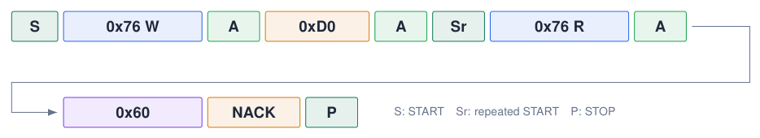
-
ESP32 writes the register number 0xD0. Sensor ACKs the address and register.
-
endTransmission(false)keeps the bus for the repeated START before reading. -
Sensor sends 0x60: BME280 ID.
ACK is the ninth clock pulse
The receiver drives LOW = ACK or leaves HIGH = NACK. The ESP32 sends NACK after the final read byte to end the read: here it is expected, not an error.
Measure adjacent SCL rising edges inside a byte: \(T_{\rm SCL}\approx10\,\text{\textmu s}\), so \(f_{\rm SCL}\approx100\) kHz. Exclude gaps between bytes.
Sources: Bosch BME280 datasheet; illustrative decoder annotations
Capture first, decode second: fix the right setting¶
Keep evidence you can explain
Save the capture as .sr and retain the PulseView setup if saved alongside it. Record the probe-to-GPIO mapping, \(f_s\), sample count, trigger and decoder settings. A decoder can be reconfigured on saved data; a missed pulse requires a new capture.
Sources: PulseView manual: decoding, cursors and saved sessions
What a decoded I2C capture looks like¶
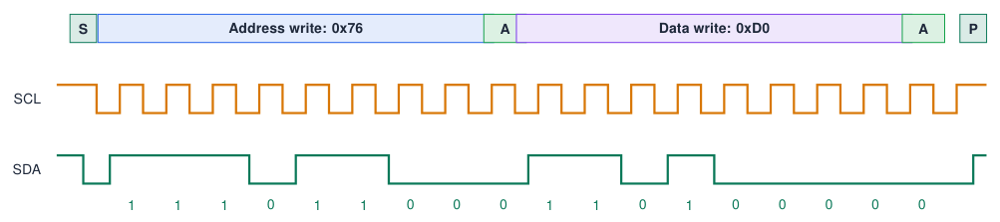
-
The decoder groups the bits into start, address, R/W, ACK, data.
-
Compare with what your code should send:
beginTransmission(0x76); write(0xD0);
Typical findings
NACK after the address = wrong address or device not powered. No clock at all = wrong pins in Wire.begin().
Sources: Simplified drawing
Quiz: SPI and the logic analyzer¶
-
Why does SPI need no addresses?
Check your answer
Each slave has its own chip-select line: only the selected one listens.
-
How many signal wires for 3 SPI devices?
Check your answer
SCK, MOSI, MISO + 3 CS = 6.
-
What does
SPI.transfer(0x00)do?Check your answer
It sends a dummy byte to generate 8 clocks and returns the byte received from the slave.
-
You capture I2C at 100 kHz with 200 kHz sample rate. Problem?
Check your answer
Too few samples per bit: edges are missed. Use \(\geq\) 1 MHz.
-
What must you always connect first on a logic analyzer?
Check your answer
GND.
Exercises: SPI and logic analyzer¶
Exercise 1 – Measure your own signals
Capture the Blink example and measure the period. Then capture ledcWrite() PWM at different duty cycles and verify the duty with the analyzer.
Exercise 2 – Decode I2C
Capture the BME280 chip-ID read. Identify every part: start, 0xEC, ACK, 0xD0, repeated start, 0xED, 0x60, NACK, stop.
Exercise 3 – UART on the wire
Send the letter 'A' on Serial2 at 115200 baud. Capture it, measure one bit time and decode the byte by hand.